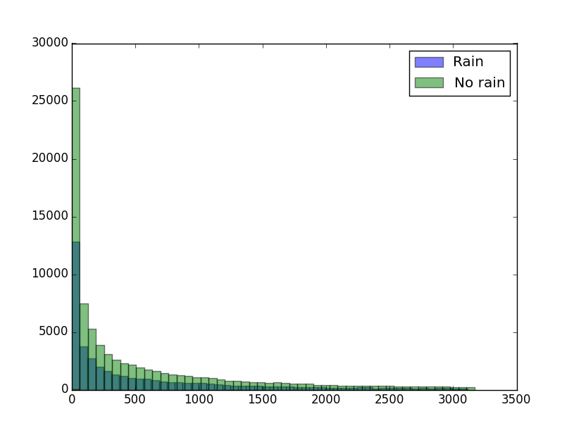
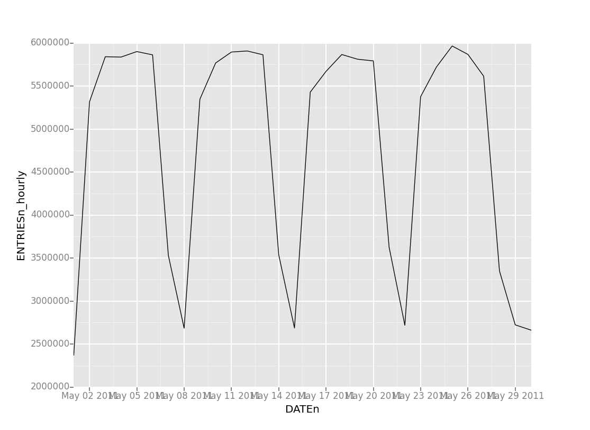

We used the Mann-Whitney U-test to test the relationship between rain and subway ridership. This was a non-directional test, as it not yet known if rain positively or negatively impacts the subway ridership, thus, a two-tailed test was appropriate with a p-critical value of 0.025. Null hypothesis:
There is no statistical significant correlation between rain and subway ridership.
The dependent variable, the number of entries per hour, is heavily (positively) skewed, and so we had to use a test that allowed for this. Therefore, the Mann-Whiteny U-test was utilized, and not an ordinary T-test.
We calculated the means of subway ridership with and without rain to be 1105 and 1090, respectively. The results were significant, but barely. With a p-value of 0.2499991, we can now say that there is a correlation between rain and subway ridership.
Whether it rains or not is up to the weather gods, and completely independent of any other value. I think it's safe to say that subway ridership does not cause rain, and as such, rain must cause an increase in subway ridership. This, of course, is a very logical conclusion as all other modes of transportation affected by rain (walking, cycling, but not driving or taking a cab) become a less atractive option.
I used both gradient descent and OLS (using Statsmodels) to produce predictions for ENTRIESn_hourly in my regression model. Both produced exacly (accounting for rounding) the same coefficients.
For features, or input variables, I chose Hour, maximum temperature, meanwindsdpi and rain. Also, a column of 1s was added (intercept) and used dummy variables for the UNIT variable.
From all the variables to choose from, Hour immediately caught my eye as probably being the most influencial. After all, people's traveling habits are generally periodical. Maximum temperature, I believe, is more influential than mean temperature as the mean temperature takes the temperatures at night into account, whereas people more frequently travel when the sun's still shining, especially in May. I chose rain and wind because, judging by own experience, those are the weather conditions that might trigger you to use public transportation.
Taking into account the subway station (by proxy, via UNIT) greatly increased my model's accuracy, but did so at the cost of creating hundreds of additional theta-values. But more importantly, it adds complexity whereas the geographical location is not of importance in any of our big questions. However, it's a crucial statistic in estimating the total number of subway entries given all other variables are known.
After some testing, I found the following values:
| Feature | Parameter |
| Rain | 2.0865 |
| Wind | 59.1678 |
| Hour | 413.8185 |
| Temperature | -13.3750 |
| Intercept | 1102.1463 |
We can see that the specific turnstile unit plays a huge role in predicting the entries on a given hour, with a given temperature, rain, and wind. This is to be expected, as there naturally are busy and not-so-busy stations. Furthermore, an R squared value of 0.5022 is actually pretty high. It appears as if our model has a pretty good fit on the actual data.
Here's a histogram depicting the turnstile entries (hourly) with both rain and dry weather. Both appear to have roughly the same distribution, albeit not normal, which caused us to use the Mann-Whitney U-test. 
Then I've made a graph of subway entries by day, taken over the course of the month of May, 2011. It immediately becomes very clear that day of the week is the driving force behind the subway ridership on any given day. It's a cyclical graph, with minima at Sundays and maxima at Wednesdays and Thursdays. Also notable is the even lower minimum at the last Monday, being Memorial Day. 